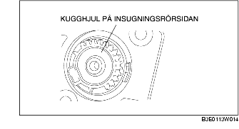

DEMONTERING/MONTERING AV STYRDON FÖR VARIABLA INSUGNINGSLUFTENS SPJÄLLVENTIL [Z6]
B3E011320130W01
-
Försiktigt
-
• Observera följande efter demontering av styrdonet för att förhindra onormalt slitage eller låsning i växeln vilket kan orsaka fel i spjällventilen.
-
- Dra inte ut kugghjulet på insugningsrörssidan.

-
- Låt inte främmande material komma i kontakt med kugghjulet på insugningsrörssidan.
-
- Se till att det inte kommer in främmande material i styrdonet.
-
• Felaktig montering av styrdonet och hållaren orsakar låsning i växeln och kan göra att spjällventilen slutar fungera. För att förhindra detta, montera styrdonet och spjällventilen enligt följande:
1. Lossa batteriets minuskabel.
2. Demontera i den ordning som anges i tabellen.
|
1
|
Styrdon för avstängningsventil för variabel insugningsluft
|
|
2
|
Hållare
|
3. Montera i omvänd ordning mot demonteringen.
Observera vid demontering av styrdon för variabla insugningsluftens spjällventil
1. När du demonterat styrdonet, täck det med plast så att främmande material inte kommer in i styrdonet.
Observera vid demontering av hållare
1. När du demonterat hållaren, täck den med plast så att främmande material inte kommer i kontakt med kugghjulet på insugningsrörssidan.
Observera vid montering av hållare
1. Montera hållaren genom att placera den utstickande delen på insugningsröret i spåret på hållaren.
2. Var försiktig så att du inte ändrar hållarens läge.
Observera vid montering av styrdon för variabla insugningsluftens spjällventil
1. Kontrollera att hållarens läge inte ändrats.
2. Kontrollera att packningen sitter på plats.
3. Kontrollera att kugghjulet på insugningsrörssidan och styrdonets kuggar går ihop ordentligt så att du kan montera styrdonet utan att använda överdriven kraft.